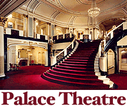

The Palace Theater

Built in 1926, the Palace was once the place to go in Columbus. Just about every famous singer or comedian of the 40's and 50's appeared there at some point. It eventually fell into disrepair and was renovated in the 1970's, during which time the magician Harry Blackstone, Jr., performed there. He organized a seance in the lobby to try to contact a friend of his father's but ended up getting a wrong number: the ghost of a man who was murdered in the theater. The participants described the scene as being extremely frightening, and one in particular claimed to have been confronted with spots of "heavy, dark air" on the second floor.
I've been to the Palace on one or two occasions and never felt anything, but that doesn't mean nothing's there. This is actually one of the darker legends about Columbus landmarks.
The Palace is located at 34 West Broad Street, phone (614) 431-3600.
Back